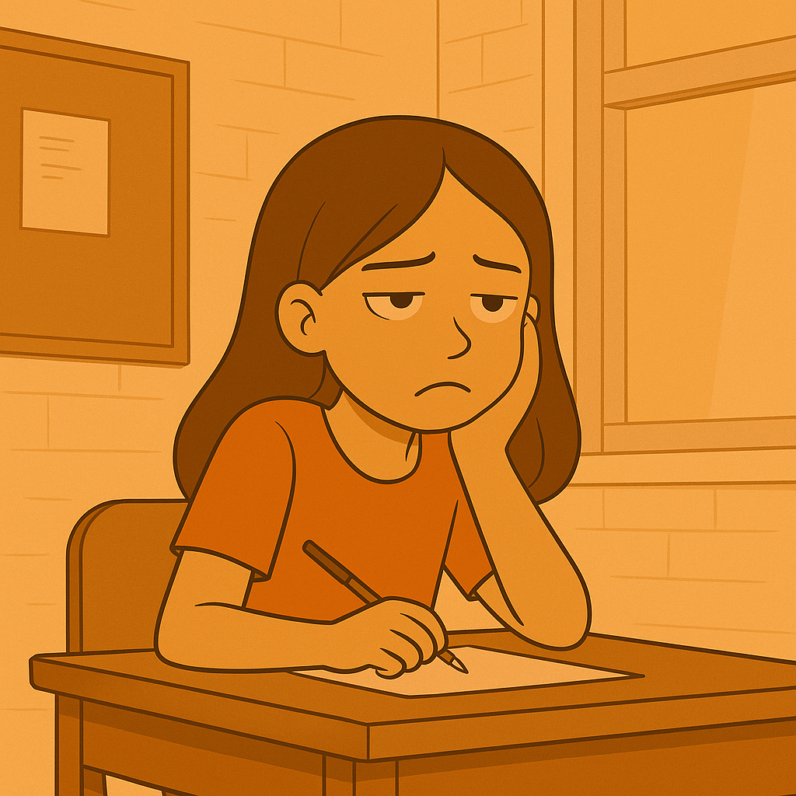

Why Effort-Based Rewards Build Real Confidence
Not every student is motivated by the same things. Some thrive on solving problems for the sheer joy of it, just as some adults pursue projects for passion rather than pay. Others need visible signs of progress to feel encouraged. In both classrooms and workplaces, recognition is often what sparks someone to keep going when the task feels uncertain.
A classroom story
Mia, a Year 8 student, disliked maths. When her work was judged only on whether she reached the right answer, she often shut down before even starting. Yet when her teacher shifted the system, giving recognition for showing working, persistence with difficult steps, and effort to re-attempt errors, Mia changed. Tokens for participation seemed small, but they mattered. The acknowledgement told her she was making progress even when the answer wasn’t perfect. Slowly, she built the confidence to take risks, raise her hand, and tackle harder problems.
Why effort matters more than ability
This insight has a long history. In the 1970s, Carol Dweck and her colleagues carried out experiments where groups of children were praised in different ways after solving puzzles. Children praised for being intelligent tended to avoid more challenging tasks in later rounds, often choosing easier options that would preserve their “smart” image. In contrast, children praised for effort and strategy embraced harder challenges, persisted longer, and responded more positively to mistakes. These findings laid the groundwork for what became known as the “growth mindset.”
The lesson is straightforward. Rewards and praise guide how students interpret success. When recognition focuses on effort, students are encouraged to view learning as something within their control. When recognition focuses on ability, students may learn to protect the label instead of pursuing growth.
Building encouragement into confidence
A decade later, Edward Deci and Richard Ryan were investigating how different forms of motivation affect behaviour, eventually developing what is now called Self-Determination Theory. Their research showed that people are most motivated when they feel competent, connected, and autonomous. Crucially, competence in this sense did not mean being the best, it meant feeling capable of making progress. In classrooms, even modest tokens or acknowledgements can serve as evidence of that progress. They carry the message, “You tried, you moved forward.”
When encouragement is consistent, it sets off a chain reaction. Recognition of effort brings a willingness to keep trying, repeated effort builds competence, competence nurtures confidence, and confidence sustains engagement even when external rewards fade.
Why this matters for teaching
A reward system built around effort is more than a behaviour management tool. It tells students that their value lies in their actions, not in fixed traits. For students like Mia, who once saw failure as proof of inability, this shift changes everything. Tokens become encouragement markers that accumulate into lasting self-belief, which in turn fuels deeper engagement with learning.
References
Dweck, C. (1975). The role of expectations and attributions in the alleviation of learned helplessness. Journal of Personality and Social Psychology, 31(4), 674–685.
Mueller, C., & Dweck, C. (1998). Praise for intelligence can undermine children’s motivation and performance. Journal of Personality and Social Psychology, 75(1), 33–52.
Deci, E. L., & Ryan, R. M. (1985). Intrinsic Motivation and Self-Determination in Human Behavior. Springer Science & Business Media.